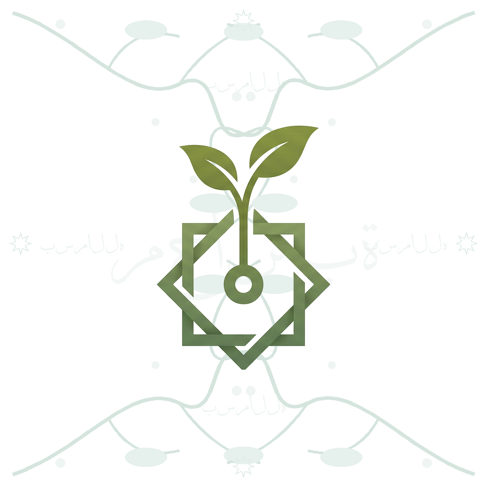

A. Calm Minimalist Recommended
Cream background in light mode, deep ink in dark. Icon fades in with a subtle scale (0.92 → 1.00), wordmark and tagline follow. The closest match to the existing “gentle, not flashy” brand voice.
Why pick this: least visual noise, fastest perceived load, future-proof across all 23 locales.

B. Reverent Geometric
Faint repeating 8-point Islamic star pattern fills the background; the app icon settles in over it. No wordmark — the visual carries the meaning. Most explicitly “Islamic-feeling” without being heavy.
Why pick this: distinctive, culturally resonant, no localization concerns (image only).
C. Warm Gradient + Bilingual
Vertical gradient background, soft glowing icon (slow pulse), “Muhasaba” in Latin script with the Arabic مُحَاسَبَة beneath it. Most expressive of the four.
Why pick this: communicates the Islamic origin clearly, feels alive without being busy.
D. Growing Sapling Story
Tells the icon's own story: a seed appears, the stem grows, leaves unfurl, then the 8-point star is drawn around the plant. Wordmark fades in last.
Longest animation — users wait ~1.5s before the app shows. Use only if you accept that trade-off.